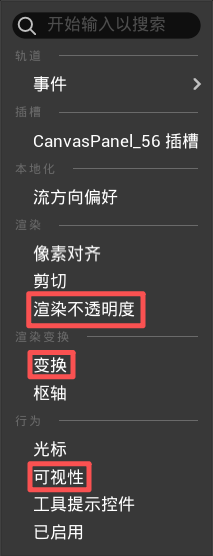
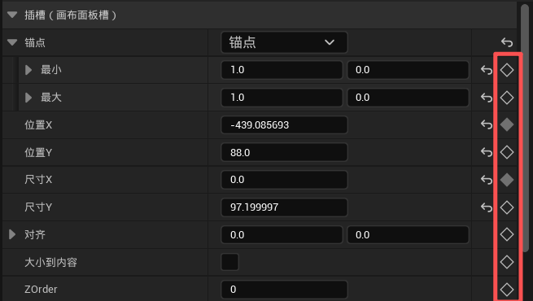
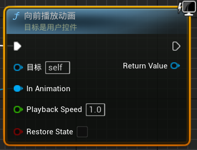
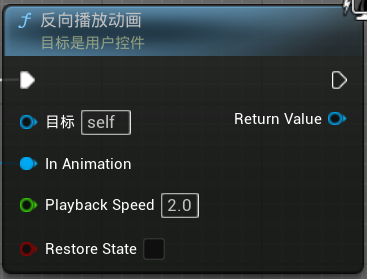
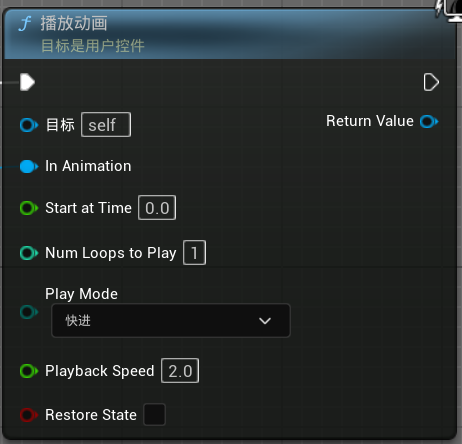

UI 动画¶
Widget Animation · 控件动效 · 入场退场。
和关卡序列一样的道理¶
Widget 动画和关卡序列本质上一回事——打关键帧，中间自动过渡。
区别只在于：关卡序列控制的是场景里的 Actor，Widget 动画控制的是 UI 控件。
常用轨道¶
打开任意 Widget Blueprint → 左下角 动画 面板 → 新建动画 → 在时间轴上给控件添加轨道：
| 轨道 | 效果 | 什么时候用 |
|---|---|---|
| 变换 | 位移、缩放、旋转 | 面板滑入滑出、按钮弹跳 |
| 可视性 | 显示/隐藏 | 控件突然出现或消失 |
| 渲染不透明度 | 0（全透）↔ 1（不透） | 渐入渐出 |

渐入：0s 时渲染不透明度 = 0 → 0.3s 时渲染不透明度 = 1 渐出反过来即可。
进阶：在细节面板直接加关键帧¶
除了轨道列表，还可以选中控件 → 右侧细节面板 → 在插槽属性旁边点 + 号直接加关键帧：

这种方式更灵活——你看到哪个属性想动，就在它旁边点一下。位置、大小、间距、颜色……几乎任何属性都能打关键帧。
案例参考¶
项目的 WBP_TaskPanel2 里有一段典型的 UI 动画，路径：
打开这个文件 → 左下角动画面板，可以看到实际项目里是怎么用的。
蓝图调用动画¶
blueprint


